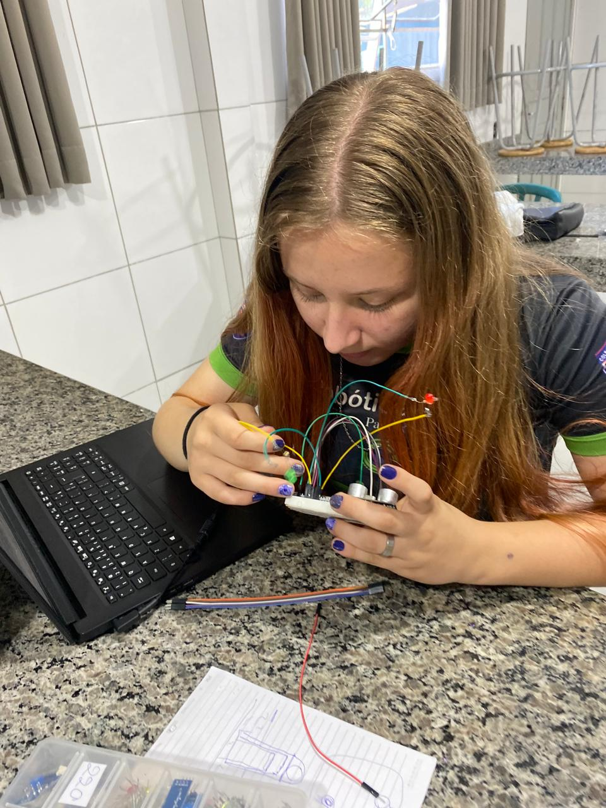
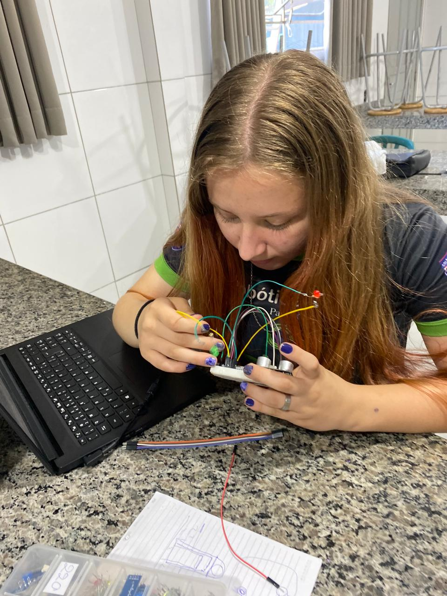
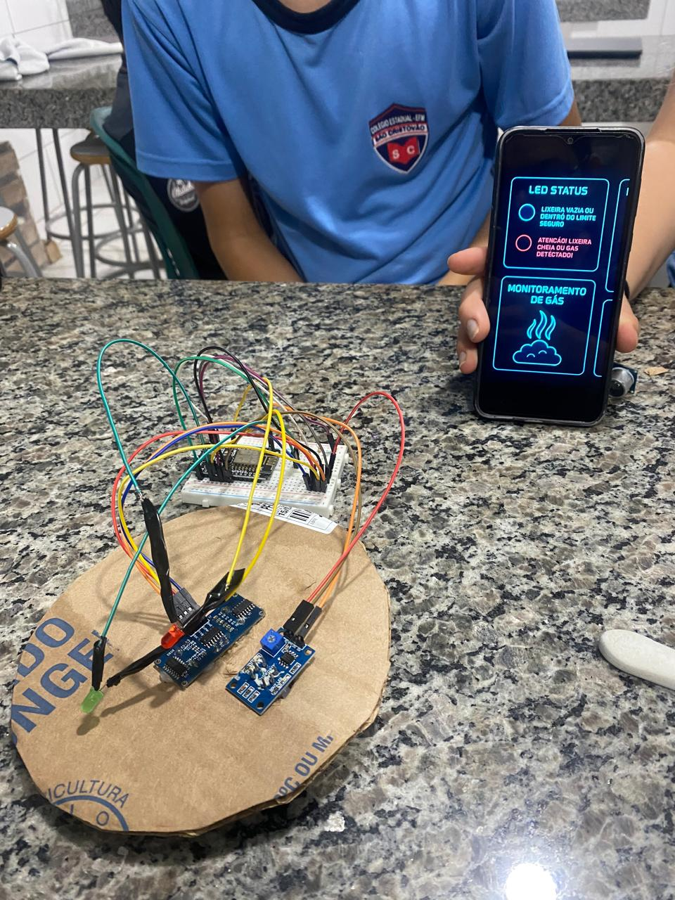
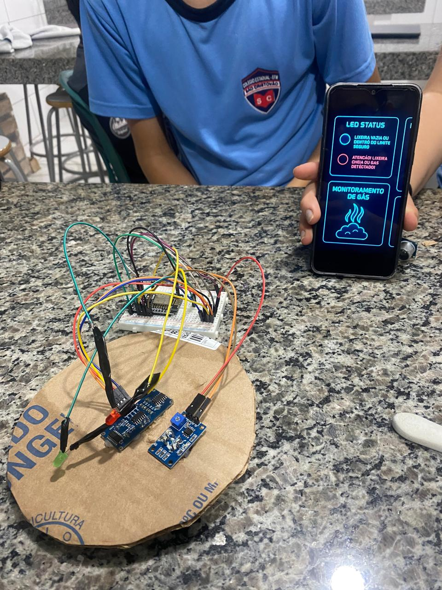

Construção do Projeto
Durante a construção do nosso projeto de Monitoramento de Lixo nos Distritos, passamos por diversas etapas de montagem, testes de sensores e programação. Abaixo estão alguns registros desse processo:
Montagem dos Componentes:
 

 


Testes de Monitoramento de Gás:
Utilizamos sensores de gás integrados com o ESP32 para realizar testes de detecção. Criamos uma interface para acompanhar os níveis de gás em tempo real.

Integração com a Plataforma ThingSpeak:
Os dados captados pelos sensores foram enviados para a plataforma ThingSpeak, permitindo a visualização de gráficos atualizados em tempo real.
Desenvolvimento Cronológico do Projeto:
Semana 1: Definição da proposta e pesquisa dos sensores.
Semana 2: Compra dos materiais e início da montagem.
Semana 3: Desenvolvimento e testes dos sensores (ultrassônico e MQ-4).
Semana 4: Programação do ESP8266 e integração com ThingSpeak.
Semana 5: Construção física da lixeira e instalação dos sensores.
Semana 6: Testes finais, coleta de dados e ajustes.
Resultados Finais:
O projeto proporcionou aos alunos uma visão prática sobre sustentabilidade, tecnologia e inovação. A lixeira inteligente demonstrou ser uma solução eficiente para o monitoramento de resíduos e qualidade do ar, promovendo uma conexão direta entre campo e cidade. A utilização de sensores, automação e IoT (Internet das Coisas) contribuiu para a formação dos alunos na área de robótica, programação e responsabilidade ambiental.